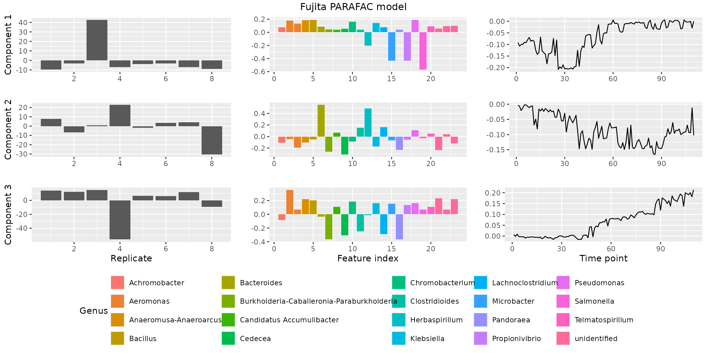

Introduction to PARAFAC modelling
PARAFAC_introduction.RmdIntroduction
Welcome to the parafac4microbiome R package! In this
vignette we explain the data available in this package, how you can
model them using PARAFAC and how to plot the outcome. We require the
following packages and dependencies.
Datasets
The parafac4microbiome package comes with three
datasets: Fujita2023, Shao2019 and
vanderPloeg2024. These refer to the first authors of their
respective papers. Each of the dataset objects are lists with the
following contents:
- data: the data cube of microbiome counts.
- mode1: metadata corresponding to the subject mode.
- mode2: metadata corresponding to the feature (microbial abundances) mode.
- mode3: metadata corresponding to the time mode.
We briefly show what the data in these datasets look like and then
focus on Fujita2023 for the remainder of this vignette. For
details on the datasets we refer to the parafac4microbiome paper and to
the original papers as listed in their respective help files. Modelling
and component selection are explained in more detail in the vignettes
corresponding to each dataset:
vignette("Fujita2023_analysis"),
vignette("Shao2019_analysis") and
vignette("vanderPloeg2024_analysis").
dim(Fujita2023$data)
#> [1] 8 28 110
dim(Shao2019$data)
#> [1] 395 959 4
dim(vanderPloeg2024$data)
#> [1] 41 2253 7
# We focus on Fujita2023
head(Fujita2023$data[,,1])
#> [,1] [,2] [,3] [,4] [,5] [,6] [,7] [,8] [,9] [,10] [,11] [,12] [,13]
#> [1,] 11932 0 0 0 0 0 0 0 0 113 0 161 0
#> [2,] 11532 0 0 0 0 0 0 0 0 0 0 0 0
#> [3,] 10331 0 0 0 0 0 0 0 0 236 0 0 1824
#> [4,] 11528 0 0 0 0 0 0 0 0 0 0 0 0
#> [5,] 13735 0 0 0 0 0 0 0 0 139 0 0 0
#> [6,] 9167 0 0 0 0 0 0 0 0 247 0 0 0
#> [,14] [,15] [,16] [,17] [,18] [,19] [,20] [,21] [,22] [,23] [,24] [,25]
#> [1,] 0 0 0 0 0 719 0 0 0 0 0 230
#> [2,] 0 0 0 0 0 0 0 38 0 0 0 0
#> [3,] 0 0 0 0 0 0 0 0 0 0 162 0
#> [4,] 0 0 0 0 0 0 0 0 0 0 0 0
#> [5,] 217 0 0 0 0 239 0 0 67 0 0 0
#> [6,] 0 0 0 0 0 0 0 0 0 0 0 0
#> [,26] [,27] [,28]
#> [1,] 0 0 0
#> [2,] 0 0 231
#> [3,] 0 0 0
#> [4,] 0 0 0
#> [5,] 0 0 0
#> [6,] 0 0 0
head(Fujita2023$mode1)
#> # A tibble: 6 × 1
#> replicate.id
#> <int>
#> 1 1
#> 2 2
#> 3 3
#> 4 4
#> 5 5
#> 6 6
head(Fujita2023$mode2)
#> ID Kingdom Phylum Class
#> 1 X_0002 Bacteria Proteobacteria Gammaproteobacteria
#> 2 X_0004 Bacteria Firmicutes Clostridia
#> 3 X_0007 Bacteria Proteobacteria Gammaproteobacteria
#> 4 X_0008 Bacteria Proteobacteria Gammaproteobacteria
#> 5 X_0010 Bacteria Proteobacteria Gammaproteobacteria
#> 6 X_0015 Bacteria Firmicutes Clostridia
#> Order Family
#> 1 Aeromonadales Aeromonadaceae
#> 2 Peptostreptococcales-Tissierellales Peptostreptococcaceae
#> 3 Burkholderiales Burkholderiaceae
#> 4 Burkholderiales Burkholderiaceae
#> 5 Enterobacterales unidentified
#> 6 Lachnospirales Lachnospiraceae
#> Genus Species
#> 1 Aeromonas unidentified
#> 2 Clostridioides mangenotii
#> 3 Pandoraea unidentified
#> 4 Burkholderia-Caballeronia-Paraburkholderia unidentified
#> 5 unidentified unidentified
#> 6 Lachnoclostridium unidentified
head(Fujita2023$mode3)
#> # A tibble: 6 × 1
#> time
#> <dbl>
#> 1 1
#> 2 2
#> 3 3
#> 4 4
#> 5 5
#> 6 6Analysis
Processing the data cube
As shown above, the data cube in Fujita2023$data contains unprocessed
counts. The function processDataCube() performs the
processing of these counts with the following steps:
- It performs feature selection based on the sparsityThreshold setting. Sparsity is here defined as the fraction of samples where a microbial abundance (ASV/OTU or otherwise) is zero.
- It performs a centered log-ratio transformation of each sample using
the
compositions::clr()function with a pseudo-count of one (on all features, prior to selection based on sparsity). - It centers and scales the three-way array. This is a complex subject, for which we refer to a paper by Rasmus Bro and Age Smilde. By centering across the subject mode, we make the subjects comparable to each other within each time point. Scaling within the feature mode avoids the PARAFAC model focussing on features with abnormally high variation.
The outcome of processing is a new version of the dataset. Please
refer to the documentation of processDataCube() for more
information.
processedFujita = processDataCube(Fujita2023, sparsityThreshold=0.99, CLR=TRUE, centerMode=1, scaleMode=2)
head(processedFujita$data[,,1])
#> [,1] [,2] [,3] [,4] [,5] [,6] [,7] [,8] [,9]
#> [1,] -0.5098 -0.265 -0.2669 -0.2743 -0.3655 -0.562 -0.2923 -0.5410 -0.890
#> [2,] 0.0763 0.017 0.0171 0.0176 0.0234 0.036 0.0187 0.0346 0.057
#> [3,] -0.5155 -0.179 -0.1797 -0.1847 -0.2461 -0.378 -0.1969 -0.3644 -0.600
#> [4,] 0.5277 0.218 0.2197 0.2258 0.3008 0.462 0.2406 0.4454 0.733
#> [5,] -0.2311 -0.228 -0.2296 -0.2359 -0.3144 -0.483 -0.2514 -0.4653 -0.766
#> [6,] -0.0526 0.102 0.1022 0.1050 0.1399 0.215 0.1119 0.2071 0.341
#> [,10] [,11] [,12] [,13] [,14] [,15] [,16] [,17] [,18] [,19]
#> [1,] 0.544 -0.862 -1.703 -0.495 -0.672 -0.4608 -0.2023 9.04 -0.9420 -1.199
#> [2,] -0.805 -0.575 -0.998 -0.272 0.043 0.0295 0.0130 -2.88 0.0603 4.373
#> [3,] 0.818 3.962 -1.487 -0.427 -0.453 -0.3104 -0.1363 -3.50 -0.6344 -1.010
#> [4,] -0.703 -0.369 -0.495 -0.114 0.553 0.3793 0.1666 -2.25 0.7754 -0.142
#> [5,] 0.627 -0.824 6.713 -0.466 -0.578 -0.3964 -0.1740 7.02 -0.8102 -1.118
#> [6,] 0.975 -0.488 -0.787 -0.206 0.257 0.1764 0.0775 -2.62 0.3607 -0.398
#> [,20] [,21] [,22] [,23]
#> [1,] -0.3990 10.070 -0.6812 -0.7411
#> [2,] 0.0255 -1.517 0.0436 0.0474
#> [3,] -0.2687 -2.252 -0.4588 -0.4991
#> [4,] 0.3285 -0.761 0.5608 0.6100
#> [5,] -0.3432 -2.438 -0.5860 -0.6374
#> [6,] 0.1528 -1.200 0.2608 0.2837Making a PARAFAC model
The processed data is ready to be modelled using Parallel Factor
Analysis. Here we arbitrarily set the number of factors (i.e. the number
of components) to be three. This is normally the outcome of a more
detailed investigation into the correct number of components, described
in vignette("Fujita2023_analysis"),
vignette("Shao2019_analysis") and
vignette("vanderPloeg2024_analysis"). The output of the
function is a parafac object containing the loadings in each mode and
some statistics like R-squared and the sum of squared error.
set.seed(0) # for reproducibility
model = parafac(processedFujita$data, nfac=3, verbose=FALSE)
head(model$Fac[[1]])
#> [,1] [,2] [,3]
#> [1,] -264.3 -116 363
#> [2,] -85.3 -223 350
#> [3,] 1151.4 -196 431
#> [4,] -207.6 1549 -935
#> [5,] -101.9 -165 115
#> [6,] -91.9 -98 111
head(model$Fac[[2]])
#> [,1] [,2] [,3]
#> [1,] 0.05013 0.0538 0.0659
#> [2,] 0.01393 0.0375 -0.1227
#> [3,] 0.00925 -0.1197 -0.0283
#> [4,] 0.01035 -0.1292 -0.0192
#> [5,] 0.01339 -0.0419 0.1130
#> [6,] 0.02418 0.0308 -0.1232
head(model$Fac[[3]])
#> [,1] [,2] [,3]
#> [1,] -0.0123 -5.16e-04 4.42e-04
#> [2,] -0.0142 -7.40e-04 -2.10e-03
#> [3,] -0.0134 -1.63e-03 7.54e-05
#> [4,] -0.0131 -5.58e-04 -1.70e-03
#> [5,] -0.0122 -6.15e-05 -7.12e-04
#> [6,] -0.0124 -1.47e-04 -8.95e-04
model$varExp
#> [1] 39This model explains 38.991 percent of the variation in the processed data cube.
Plotting a PARAFAC model
We have implemented the plotPARAFACmodel() function to
allow the user full control over how they want to visualize their model.
As such, there are a lot of plotting options that can be used, which you
can see below. A brief overview:
- colourCols: per mode (subject, feature, time), specifies by what variable the loading bar plot should be coloured.
- legendTitles: titles of the legends per mode, if colourCode is not specified for a mode, a legend will not be generated.
- xLabels: labels for the x axis of each mode.
- legendColNums: the number of columns in the legend for each mode. If colourCode is not specified for a mode, a legend will not be generated.
- arrangeModes: a vector of boolean values specifying if the loadings should be grouped by their colourCol for easier inspection.
- continuousModes: a vector of boolean values specifying if the loadings should be visualized with a line plot instead of the default bar plot.
- overallTitle: title of the plot.
For a full overview, please refer to the documentation of
plotPARAFACmodel().
plotPARAFACmodel(model$Fac, processedFujita,
numComponents = 3,
colourCols = c("", "Genus", ""),
legendTitles = c("", "Genus", ""),
xLabels = c("Replicate", "Feature index", "Time point"),
legendColNums = c(0,5,0),
arrangeModes = c(FALSE, TRUE, FALSE),
continuousModes = c(FALSE,FALSE,TRUE),
overallTitle = "Fujita PARAFAC model")
This concludes the introduction to the
parafac4microbiome package. We hope this gives you
sufficient information to get started. For more details on modelling
specific datasets, please refer to
vignette("Fujita2023_analysis"),
vignette("Shao2019_analysis") and
vignette("vanderPloeg2024_analysis")